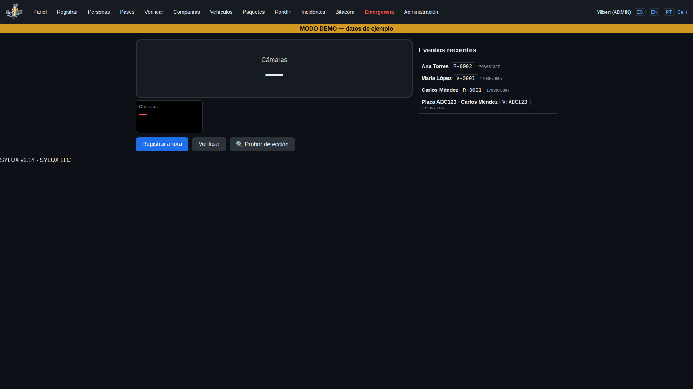

SYLUX turns the cameras your building already has into a smart gate system. Residents, visitors and deliveries are recognized in seconds — no key fobs, no handwritten logs, no new cameras to buy.
Simple for the guard, automatic for everyone else. Your security team keeps full control — SYLUX does the recognizing.
The guard registers each resident, employee or regular visitor one time — face and vehicle license plate. It takes less than a minute.
On every return visit, SYLUX recognizes the face and the plate automatically and shows the guard a clear on-screen card: registered or new visitor.
Every entry is saved with its photo, date and time. If the board ever needs to know who entered and when, the answer is one search away.

Faster entry for residents, less paperwork for guards, and a real record for management.
Residents and regular visitors are identified by face as they arrive — no stopping to show ID every time, no fobs to lose or lend.
Vehicle plates are read automatically and matched to the registered owner, so known cars flow in and unknown cars get the guard's attention.
Recurring categories for delivery drivers, mail, food delivery, movers and building service companies — organized instead of improvised at the gate.
A complete, searchable history of entries with photos, dates and times — real evidence when an incident needs to be reviewed.
SYLUX identifies and suggests — your guard always makes the final access decision. The system is a tool for your team, never a replacement for it.
Software updates are always free, and support is local, in English and Spanish, from a Florida company based in Hialeah.
We visit your property and show you exactly how SYLUX works with your own cameras — free, with no commitment. Every installation includes a 30-day evaluation period.
Book My Free DemoFor property managers, HOA boards and condominium associations in South Florida.
No. SYLUX is software that works with the cameras your building already has, as long as they provide a clear image at the gate. During the free demo we verify your cameras on the spot.
No. SYLUX runs 100% offline on a computer at your property. Your residents' data never leaves the building, and the system keeps working during internet outages.
Neither. SYLUX never records audio, and it does not replace anyone: it identifies faces and plates and shows the result to your guard, who always makes the final decision.
Condominiums, gated communities, HOAs and residential buildings with a guard gate or controlled vehicle entry, in Miami-Dade and Broward. If your guards are still writing entries down by hand, SYLUX was built for you.
Tell us about your building and we will schedule your free demonstration. We reply within one business day.
Call or text (Spanish):
954-880-5930
WhatsApp:
wa.me/19548805930
Email:
syluxllc@gmail.com
SYLUX LLC
480 E 38TH ST
Hialeah, FL 33013
Serving Miami-Dade & Broward County. Support in English and Spanish.
Founder: Yilbert Peña Rodríguez